6. Site Characterization#
Tip
The textbook (pp. 113-158) has a decent description of how to perform an overall site investigation.
Course Website
%%html
<style> table {margin-left: 0 !important;} </style>
In the previous lesson on site mapping, we examined how to determine and map the extent of contamination, focusing on delineating plume boundaries and identifying zones of concern. With that foundation in place, we now turn to the physical characteristics of the aquifer itself. Understanding these hydraulic properties is essential for predicting how contaminants will migrate and for selecting effective remediation strategies.
Readings#
Bouwer, H. and R.C. Rice, 1976. A slug test method for determining hydraulic conductivity of unconfined aquifers with completely or partially penetrating wells, Water Resources Research, vol. 12, no. 3, pp. 423-428.
The first steps beyond identifying the contaminant plume is to understand the physical characteristics of the subsurface that control groundwater movement and contaminant transport. This process, broadly referred to as site characterization, provides the foundation for selecting, designing, and evaluating remediation strategies.
In this lesson, we will focus on characterizing the hydraulic properties of an aquifer, since these govern both the rate and direction of groundwater flow. Two properties that are particularly important are:
Hydraulic Conductivity (\(K\)): a measure of how easily water can move through pore spaces or fractures.
Porosity (\(n\)): the fraction of the subsurface volume that is void space, influencing both groundwater storage and contaminant residence time.
To estimate these properties in practice, hydrogeologists rely on field-based hydraulic methods and, in some cases, tracer tests:
Slug tests provide localized estimates of aquifer response by observing how water levels recover after a sudden displacement in a well.
Pumping tests involve sustained pumping from a well and observing drawdown in surrounding wells, yielding information about aquifer transmissivity and storage at a larger scale.
Tracer tests—the intentional release and monitoring of a harmless tracer—reveal information about porosity, flow paths, and dispersion that cannot be obtained from hydraulic data alone.
Combined, these methods allow us to quantify how groundwater moves, how fast contaminants might spread, and how the subsurface will respond to remediation measures. By the end of this lesson, you should be able to explain the purpose of each method, interpret typical results, and understand their role in developing a conceptual model of a contaminated site.
Lesson Roadmap#
In this lesson, we will:
Examine “hydrogeologic frameworks” to inform any design or risk assessment decisions.
Review key hydraulic properties (hydraulic conductivity and porosity) and their significance in contaminant transport.
Introduce slug tests as a method for measuring local aquifer response.
Examine pumping tests for larger-scale characterization of transmissivity and storage.
Explore tracer tests as a tool to investigate porosity, flow paths, and dispersion.
Discuss practical considerations and limitations of each method, emphasizing their role in building a conceptual site model.
Hydrogeologic Frameworks#
The Unsaturated (Vadose) Zone#
The unsaturated, or vadose, zone is a vital component of the Earth’s subsurface that plays a pivotal role in the quality of groundwater resources. Situated above the saturated zone, where groundwater is found, the unsaturated zone acts as a barrier that contaminants must traverse before reaching the underlying aquifers.
Characteristics of the Unsaturated Zone:
Overlying the Saturated Zone The unsaturated zone is the region that overlies the saturated zone, which contains groundwater. It acts as the initial layer of defense against potential contamination, as any substances entering the unsaturated zone must pass through it before they can reach the underlying aquifers.
Contaminant Migration Contaminants introduced into the environment almost invariably encounter the unsaturated zone on their journey to the aquifers. This zone is the first line of defense against pollutants, as it often serves as a natural filter, removing or attenuating contaminants before they can impact the groundwater.
Fluid Movement Fluid movement within the unsaturated zone is governed by a complex interplay of physical forces, including surface tension, capillarity, and gravity. These forces influence the direction and rate at which water and other fluids move through the unsaturated zone. Surface tension and capillarity can draw water upward against the force of gravity, creating a dynamic and intricate flow regime.
Non-Homogeneous Nature The unsaturated zone is non-homogeneous, meaning it lacks uniformity in terms of soil and rock properties. This heterogeneity can make accurate description of the geologic makeup a challenging task. To understand the composition and structure of the unsaturated zone, extensive subsurface investigations are often required, involving techniques such as borehole drilling, soil sampling, and geophysical surveys.
Processes Governing Flow in the Unsaturated Zone:
Several critical processes influence the flow of fluids within the unsaturated zone, ultimately determining its effectiveness as a protective barrier for groundwater. These processes include:
Hysteresis Hysteresis describes the phenomenon where the wetting and drying paths of the unsaturated zone do not coincide. The relationship between moisture content and pressure or suction varies depending on whether the unsaturated zone is drying out or becoming wetter. Understanding hysteresis is essential for accurate modeling and prediction of fluid flow in this region.
Macropore Flow Macropores are relatively large openings in the subsurface, such as fractures, root channels, and wormholes, that allow for rapid flow of water and contaminants. Macropore flow can significantly influence the movement of water and contaminants in the unsaturated zone, often bypassing the slower matrix flow and presenting challenges in contamination remediation.
Capillary Movement Capillary action is the phenomenon responsible for water’s ability to move upward in narrow soil pores against the force of gravity. Capillarity is a critical mechanism in the unsaturated zone that influences moisture distribution, particularly in fine-textured soils, and can facilitate the transport of contaminants.
Darcian Flow Darcian flow is the slow, matrix flow of fluids through the unsaturated zone. It occurs when water moves through the interconnected pores and fractures within the soil and rock. This process can filter and attenuate contaminants, making it a key mechanism in protecting aquifers.
The Saturated (Aquifer) Zone#
Underlying the unsaturated (vadose) zone, where water, air, and contaminants navigate, the saturated zone is completely inundated with water.
Characteristics of the Saturated Zone:
Complete Saturation The most defining characteristic of the saturated zone is its complete saturation with water. Unlike the unsaturated zone, which allows for the presence of both air and water, this realm beneath the surface is fully immersed in water. Consequently, it is the reservoir for groundwater storage.
Geologic Environments of the Saturated Zone:
The saturated zone can be encountered in various geologic settings, each with its unique attributes and groundwater potential. These environments include:
Igneous-Metamorphic Systems In igneous and metamorphic rock environments, the saturated zone is often less abundant. These rocks are typically dry and do not yield significant amounts of groundwater. Flow within these systems primarily occurs in fractures, and in some cases, it may be substantial, contributing to localized groundwater resources.
Sedimentary Systems Sedimentary environments, comprising sediments and limestones, are more conducive to groundwater abundance compared to igneous-metamorphic systems. In these settings, groundwater typically flows between the grains and voids of the sedimentary layers, with fractures also playing a role in certain cases. The relatively permeable nature of sedimentary rocks allows for the movement and storage of substantial groundwater resources.
Alluvial-Fluvial Systems Alluvial and fluvial systems represent an abundant source of groundwater. These systems are characterized by the deposition of sediments carried by fluvial processes in shallow or deep basins. Groundwater is plentiful in these environments, with most systems comprised of clay and sand beds. The geometry of interbedding within these systems influences the behavior of groundwater flow, making it a dynamic and complex setting for hydrogeological investigations.
Flow Behavior in the Saturated Zone:
The flow dynamics within the saturated zone are influenced by the specific geologic environment in which it is found:
Fracture Flow In igneous-metamorphic systems, fracture flow is a significant factor. Water flows primarily through fractures and faults in the rock, which act as conduits for groundwater movement. The effectiveness of fracture flow in these systems depends on the density and connectivity of fractures.
Intergranular Flow Sedimentary systems exhibit intergranular flow, where water moves between the grains and voids of the sedimentary layers. This flow mechanism allows for the storage and movement of groundwater within the porous sedimentary rock.
Alluvial-Fluvial Influences Alluvial and fluvial systems present unique flow dynamics. The abundance of groundwater in these systems is influenced by the composition and geometry of the interbedding of clay and sand beds. The interaction of fluvial processes and sediment deposition plays a crucial role in groundwater availability and movement in these environments.
Groundwater Motion#
Discharge is proportional to driving energy (hydraulic gradient) cross sectional area (\(A\)), and ease of conductance (hydraulic conductivity, \(K\)) formally represented by Darcy’s law
The interstitial (seepage) velocity is estimated as
where \(n\) is the porosity.
Concepts of Investigations#
Site investigation in hydrogeology is a critical step in understanding the complex interplay between geological features, groundwater flow, and potential contamination risks. The primary goal of such investigations is to collect comprehensive and accurate data to define the extent of contamination, allowing for the design of effective remediation strategies.
Defining the Extent of Contamination:
Site investigations serve as the foundation for delineating the extent of contamination within an area. Accurate data collection is vital to ensure that contamination plumes are well-defined, enabling the design of tailored and efficient remediation approaches. As the costs associated with remediation can be substantial, the need for precise information cannot be overstated.
The Role of Site Geology:
Site geology plays a pivotal role in forming the physical framework that governs the movement of groundwater and contaminants. The geological characteristics, such as the presence of aquifers, confining layers, and structural features, profoundly influence the flow pathways and dispersion of contaminants. Thus, a thorough understanding of site geology is essential for both contamination assessment and remediation design.
Scale and Specificity:
Site investigations in hydrogeology are fundamentally different from other hydrogeologic studies, such as regional water resource assessments. These investigations focus on small areas in intricate detail, rather than broad-scale assessments. In such cases, the devil is in the details, as small features can significantly impact groundwater flow and contamination migration.
Small-Scale Features of Significance:
Shallow Water Zones One of the primary objectives of site investigations is to identify shallow water zones that may not typically be used as water resources. These zones may be close to the surface and can be more susceptible to contamination, making their assessment vital for environmental protection.
Geological Study Site geological studies provide the foundation for understanding the subsurface characteristics. Strata a few inches thick, animal burrows, root holes, cracks, decayed piping, and foundation drains are all small features that can influence groundwater flow, making their detailed quantification crucial.
Field Strategy:
A strategic approach to site investigation involves combining traditional water resources quantification methods with a detailed focus on small-scale features. This strategy allows for a comprehensive assessment of the site, ensuring that both the broader hydrogeological context and the specific intricacies are taken into account. Traditional techniques might include hydrogeological testing and monitoring well installation, while the detailed assessment would encompass close examination and quantification of small-scale features that could impact groundwater flow and contamination movement.


Subsurface Exploration Concepts#

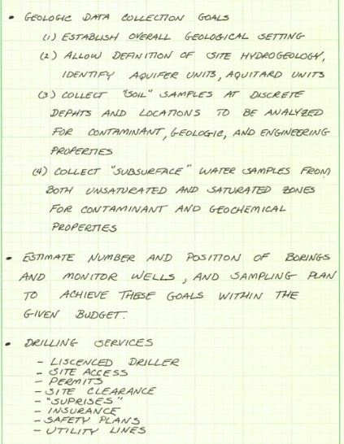
Drilling Boreholes#


Videos
Sampling Considerations#
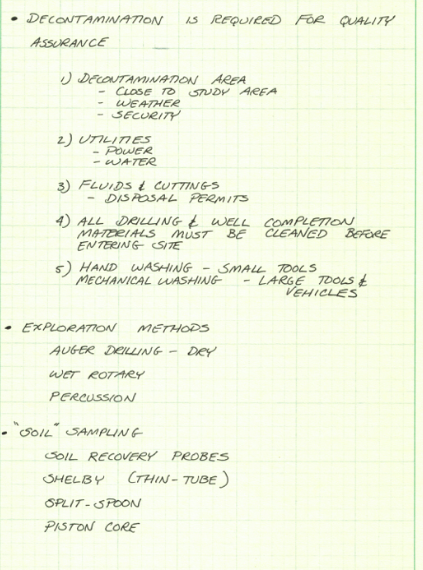
Shelby-Tube Sample Probe

Split Spoon Sample Probe (Typ.)

Piston-Core Sample Probe

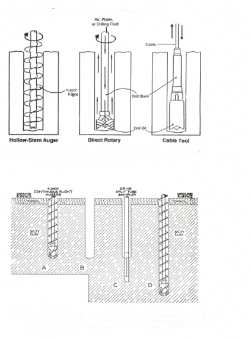
 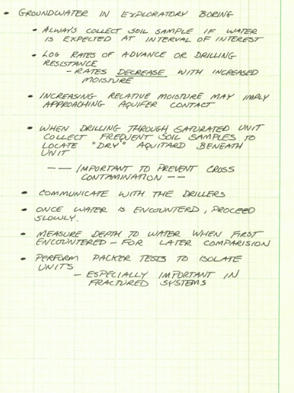
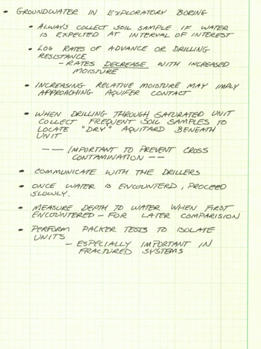
Monitoring Wells#
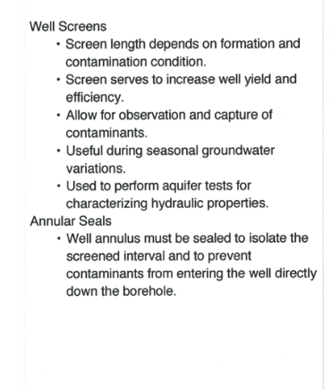
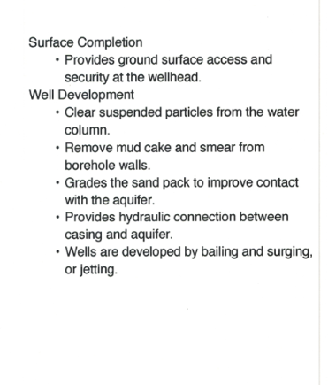 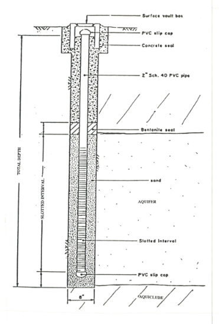
Cluster Wells


QA/QC Considerations#

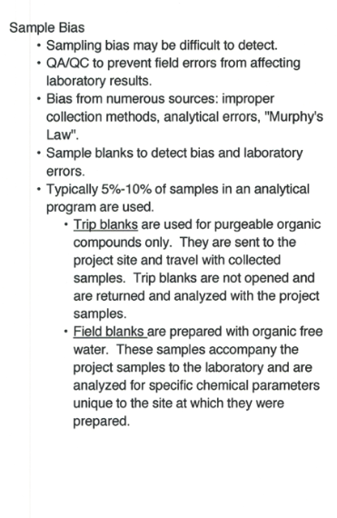 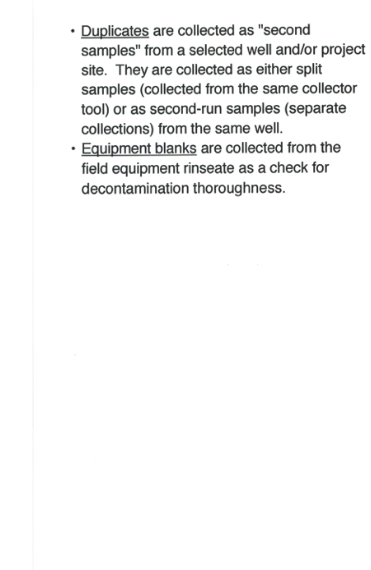


Slug Tests#
A slug test is a localized field method used to estimate aquifer hydraulic conductivity by observing how groundwater levels in a well respond to a sudden, small change in water level. This change—called a “slug”—is usually introduced by quickly adding or removing a known volume of water, or by inserting/removing a solid object. The subsequent water level recovery is recorded over time and analyzed to infer aquifer properties in the immediate vicinity of the well.
Slug tests are particularly valued in contaminated settings because they do not require sustained pumping and therefore avoid the need to withdraw, handle, and dispose of potentially contaminated water. However, the trade-off is that slug tests represent only a very small zone around the test well, limiting their spatial validity compared to larger-scale methods such as pumping tests.
Hvorslov’s Approach
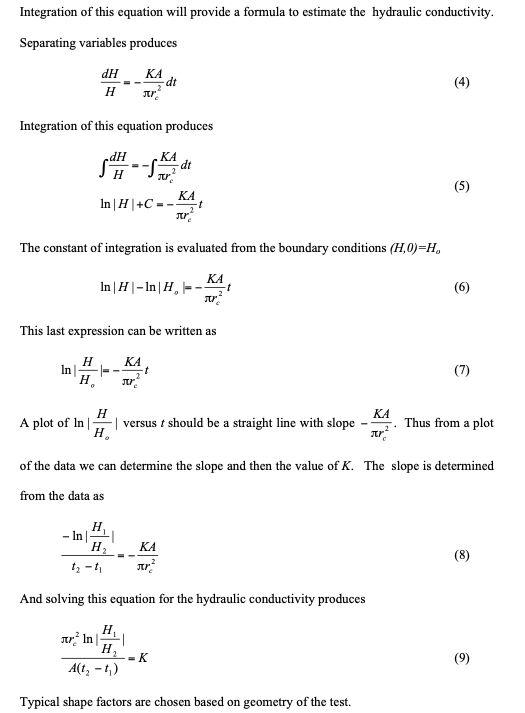
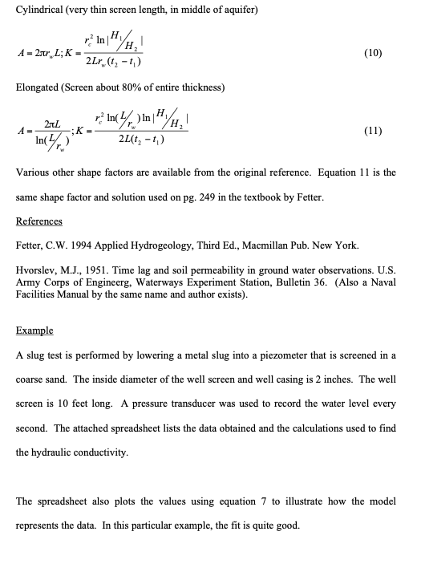
The spreadsheet above is located at Slugtest_Hvorslev.xls
A python script to perform similar analysis (K is selected by guess-and-check) is shown below
# Hvorslev Slug Test Analysis (enhanced I/O + log-log plot)
import math
import matplotlib.pyplot as plt
def HwHo(time, radius, conductivity, shape):
return math.exp(time * (-conductivity * shape) / (math.pi * radius**2))
# --- Inputs ---
r = 0.083 # well radius
R = 0.083 # filter pack radius
L = 10.0 # filter pack length
K = .000864 # K guess - larger to make model plot flatter
A = 2 * math.pi * L / math.log(L / R) # Shape factor (geometry-dependent)
dref = 13.99 # Pre-test depth to water
# --- Print inputs (1) ---
print("\n=== INPUTS ===")
print(f"{'well radius r':>22s}: {r}")
print(f"{'filter radius R':>22s}: {R}")
print(f"{'filter length L':>22s}: {L}")
print(f"{'hydraulic K':>22s}: {K}")
print(f"{'shape factor A':>22s}: {A}")
print(f"{'reference depth dref':>22s}: {dref}")
# --- Test Observations ---
etime = [0.,1.,2.,3.,4.,5.,6.,7.,8.,9.]
depth = [14.87,14.59,14.37,14.2,14.11,14.05,14.03,14.01,14,13.99]
# --- Print test data in two columns (2) ---
print("\n=== TEST DATA (Time, Depth) ===")
print(f"{'Time':>10s} {'Depth':>10s}")
for t_i, d_i in zip(etime, depth):
print(f"{t_i:10.6g} {d_i:10.6g}")
# --- Computed Values ---
Hw = [d - dref for d in depth]
HwHoObs = [0.0]*len(depth)
HwHoMod = [0.0]*len(depth)
for i, (t_i, Hw_i) in enumerate(zip(etime, Hw)):
HwHoObs[i] = Hw_i / Hw[0] if Hw[0] != 0 else float('nan')
HwHoMod[i] = HwHo(t_i, r, K, A)
# --- Print side-by-side (3): Time, HwHoObs, HwHoMod, Diff ---
print("\n=== OBSERVED vs MODELED (aligned by time index) ===")
print(f"{'Time':>10s} {'HwHoObs':>12s} {'HwHoMod':>12s} {'Diff(Obs-Mod)^2':>14s}")
for t_i, o_i, m_i in zip(etime, HwHoObs, HwHoMod):
diff = (o_i - m_i)**2
print(f"{t_i:10.6g} {o_i:12.6g} {m_i:12.6g} {diff:14.6g}")
# --- Plot (4): linear time axis ---
plt.figure(figsize=(5,7))
plt.plot(etime, HwHoObs, marker='o', linestyle='none', label='HwHoObs (Observed)')
plt.plot(etime, HwHoMod, linewidth=2, label='HwHoMod (Model)')
plt.yscale('log') # set y-axis to display a logarithmic scale ######
plt.xlabel("Elapsed Time")
plt.ylabel("H/H0")
plt.title(f"Hvorslev Slug Test: H/H0 vs Time (linear time axis)\n K={K:.3e}")
plt.grid(True, linestyle=':')
plt.legend()
plt.tight_layout()
plt.show()
=== INPUTS ===
well radius r: 0.083
filter radius R: 0.083
filter length L: 10.0
hydraulic K: 0.000864
shape factor A: 13.113191310477738
reference depth dref: 13.99
=== TEST DATA (Time, Depth) ===
Time Depth
0 14.87
1 14.59
2 14.37
3 14.2
4 14.11
5 14.05
6 14.03
7 14.01
8 14
9 13.99
=== OBSERVED vs MODELED (aligned by time index) ===
Time HwHoObs HwHoMod Diff(Obs-Mod)^2
0 1 1 0
1 0.681818 0.592444 0.00798778
2 0.431818 0.35099 0.00653325
3 0.238636 0.207942 0.000942166
4 0.136364 0.123194 0.000173446
5 0.0681818 0.0729854 2.3074e-05
6 0.0454545 0.0432397 4.90543e-06
7 0.0227273 0.0256171 8.35114e-06
8 0.0113636 0.0151767 1.45394e-05
9 0 0.00899134 8.08442e-05
Nugyen and Pinder Approach


A python script would function quite similarly and is left to the reader to construct (or you can buy one from www.aqtesolv.com)
Pumping Tests#
A pumping test is a larger-scale method used to estimate aquifer transmissivity and storage properties by pumping groundwater from a well at a controlled rate and measuring the resulting drawdown in that well and in nearby observation wells. The analysis of drawdown over time and distance allows hydrogeologists to characterize aquifer behavior at a scale that reflects natural groundwater flow more accurately than slug tests.
Pumping tests provide broader spatial validity, capturing aquifer properties over tens to hundreds of meters, which is useful for developing regional groundwater models and evaluating remediation strategies. However, in contaminated aquifers they present practical challenges: water extracted during the test must be managed and disposed of safely, adding cost and regulatory complexity.
Tracer Tests#
A tracer test involves introducing a non-reactive or minimally reactive substance into the groundwater system and monitoring its movement over time at downstream wells. By observing the arrival time, concentration, and dispersion of the tracer, hydrogeologists can estimate effective porosity, identify flow paths, and quantify dispersion and mixing processes in the aquifer.
Tracer tests provide valuable insight into how contaminants may migrate in real conditions, capturing transport behavior that hydraulic methods alone cannot reveal. However, their results are strongly influenced by the monitoring network design and subsurface heterogeneity, and they require careful planning to ensure the tracer is both environmentally safe and analytically detectable.
Taken together, slug tests, pumping tests, and tracer tests form a complementary toolkit for site characterization. Each method provides a different scale of information: slug tests are quick and localized, pumping tests extend to a broader aquifer response, and tracer tests capture transport processes along flow paths. Understanding their relative strengths and limitations helps hydrogeologists design investigations that balance practicality, cost, and the need for reliable data.
Feature |
Slug Test |
Pumping Test |
Tracer Test |
|---|---|---|---|
Scale of influence |
Very local (near the well, ~1–3 m radius) |
Regional (tens to hundreds of meters) |
Variable; depends on tracer path (tens to hundreds of meters) |
Hydraulic property |
Hydraulic conductivity (K) |
Transmissivity (T) and storage properties (S) |
Effective porosity, flow paths, dispersion |
Water handling |
No water withdrawal (preferred in contaminated settings) |
Requires withdrawal and safe disposal of potentially contaminated water |
Introduces a non-toxic tracer; no pumping required unless combined with pumping test |
Duration |
Short (minutes to hours) |
Longer (hours to days) |
Variable (hours to weeks, depending on monitoring) |
Cost & logistics |
Low cost, simple equipment |
Higher cost, pumping equipment and monitoring network required |
Moderate; requires tracer chemical and sampling/analysis program |
Spatial validity |
Limited; may not represent broader aquifer |
Broad; reflects larger-scale aquifer behavior |
Reveals flow and transport processes along flow paths, but depends on monitoring well network |
In summary, no single method provides a complete picture of aquifer behavior. Slug tests are efficient for localized estimates, pumping tests extend characterization across a wider scale, and tracer tests reveal transport processes that hydraulic methods cannot capture. By considering the advantages and limitations of each, site characterization efforts can be tailored to the hydrogeologic setting and the practical constraints of contaminated site investigation.